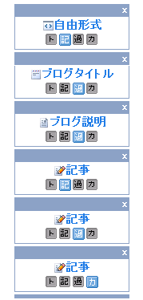

ページごとに違った感じにブログカスタマイズ
シーサーブログはわりとＨＴＭＬ編集がしやすいブログだと思いますが、if文とかシーサーブログの独自タグなどがけっこうわかりにくかったりもするものです。
カテゴリページやトップページ、記事ページごとに違った感じにブログカスタマイズしたい場合はif文などのシーサーブログ独自タグをたくさん使用するよりも、デザインのコンテンツ画面でボタンひとつでブログカスタマイズできるのでそっちの方が楽チンで簡単じゃないかなって思います。
このブログの場合はカテゴリページや過去ログページなどそれぞれのページで違った感じにカスタマイズしちゃってます。htmlのみでカスタマイズするよりも、ボタンのオンとオフで視覚的に把握できるのでこっちの方がブログカスタマイズしやすい気もしないではないです。

if文を使用しながらもしカテゴリページならとか、もし個別記事ページならとかってやってもまったく同じにはなると思いますが、ページごとに表示するhtmlを指定しておいた方があとで変えるときもわかりやすいです。
これはたぶん、シーサーブログぐらい？もしくはさくらブログやライブドアブログあたりでもあるかと思いますが、ほかの無料ブログサービスにはない便利な機能なのではないかなと思います。
使用方法は「デザインーコンテンツ」の画面で左下らへんにオプションのところがありますが、そこのページアイコンの表示っていうところのボタンを押すだけなんです。

アフィリエイト広告なんかでも過去ログページに表示してもあまり意味ないなっていうときは、自由形式のところの過去ログの「過」のボタンをオフ表示にすれば、過去ログページには広告が表示されなくなるので余分な発リンクなんかも減ってＳＥＯ的にもいいんじゃないかなって気もするんです。
関連記事
- カテゴリページのナビをブログカスタマイズ
この前は最新の記事欄をブログカスタマイズして、おとといは過去ログページもブログカスタマイズしたんで、今日はカテゴリページをいじってみようと思います。 最近の記事欄をブログカスタマイズ 過去ログをプ... - 過去ログをプルダウンでブログカスタマイズ
先日は最近の記事欄をブログカスタマイズしてみたのですが、今回は過去ログのカスタマイズに挑戦してみました。過去ログカスタマイズっていっても個別記事やカテゴリページの過去ログリンクをプルダウンするって感じ... - 最近の記事欄をブログカスタマイズ
シーサーブログで最近の記事欄を何気にカスタマイズしてみました。以前にも最新の記事欄をカスタマイズしてみたのですが、最新記事が一番上にくるようになったんでなかなかいい感じだなって思ってます。 シーサー... - タグページをブログカスタマイズ
ブログカスタマイズも難易度が高いのはやっぱタグページなんじゃないかなって気がします。ブログ初心者にとってはけっこう難しいようなんですが、がんばって挑戦してみました。 シーサーブログでのタグページの私... - フッターのブログカスタマイズ css
ブログカスタマイズもあれこれやってきましたが、今回はフッターの簡単カスタマイズに挑戦してみました。お手本にしたのは身近なところで、シーサーブログ管理画面の下の方のやつです。 - ブログのタグタイトルをSEOカスタマイズ
今日のブログカスタマイズは、タグページのタイトルタグや説明文をSEO的にカスタマイズしようと思います。タグページの例としてはてなダイアリーやライブドアブログなんかのを見てみると、こんな感じになっている...